¿Cuántas galaxias hay en el universo?
Una pregunta que suena trivial y termina obligándonos a inventar el conteo automático de objetos, el volumen comóvil, el corrimiento al rojo, la función de luminosidad y la astroinformática moderna. La respuesta destilada: ≈ 4 galaxias por cada 10 megaparsec cúbicos comóviles.
¿Cuántas galaxias hay en el universo? El profesor parte con esta pregunta aparentemente inocente y dedica toda la clase a refinarla. Cada vez que intentamos responderla aparece un nuevo problema, y cada problema nos enseña algo sobre las galaxias y sobre el universo. Es un buen ejemplo de cómo en ciencia la pregunta correcta vale más que la respuesta: para contestarla bien hay que definir un volumen, distinguir galaxias de estrellas y cuásares, medir distancias, elegir una región representativa, corregir lo que no vemos y, finalmente, integrar una función. Para alguien de informática, es básicamente diseñar un pipeline de medición con manejo cuidadoso de sesgos e incertidumbre.
La pregunta y los órdenes de magnitud
Antes de contar galaxias, calibremos nuestra intuición numérica.
El profesor pide primero un número más sencillo: ¿cuántas estrellas hay en la Vía Láctea? El orden de magnitud es de unas 1011 (un 1 seguido de unos 11 ceros, ≈ cien mil millones). Nadie las contó una por una: es una estimación. Y justamente esta clase trata de cómo se cuenta sin contar uno por uno.
Al pasar a "¿cuántas galaxias hay en el universo?" aparece de inmediato la primera complicación: si el universo es infinito, hay infinitas galaxias. La pregunta, tal como está, no tiene respuesta. Hay que acotarla.
Es el clásico problema de una consulta mal definida sobre un dataset potencialmente no acotado. Antes de pedir un COUNT(*) hay que fijar el scope: sobre qué volumen, en qué época, con qué criterios de inclusión. La mitad del trabajo científico es transformar una pregunta vaga en una especificación operacional medible.
De "cuántas" a densidad: el volumen comóvil
No contemos el total, contemos cuántas hay por unidad de volumen… pero ¿de cuándo?
La salida es cambiar la pregunta: en vez del total, calculamos una densidad — cuántas galaxias hay por unidad de volumen en un pedazo típico del universo. Si conocemos esa densidad, multiplicando por el volumen del universo visible obtenemos el total. Pero surge otro problema: el universo está en expansión, así que el volumen cambia con el tiempo. Diez galaxias en una caja hoy ocuparán una caja más grande en el futuro; la densidad física decae con el tiempo aunque no se cree ni destruya ninguna galaxia.
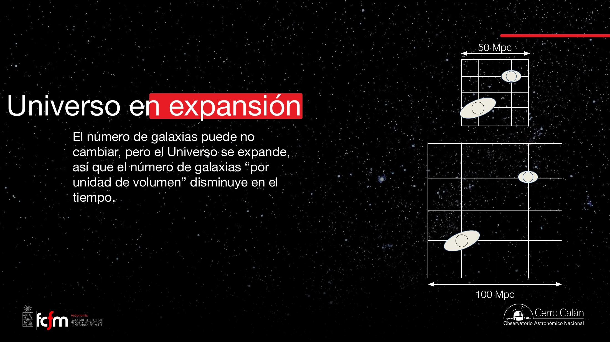
La clave es que la expansión solo gana a escalas muy grandes. A escala de tu cuerpo manda la fuerza electromagnética; a escala de un planeta o una galaxia, e incluso del Grupo Local (Vía Láctea + Andrómeda + Triángulo + satélites), manda la gravedad y las cosas quedan ligadas. La expansión empieza a dominar recién a escala de distancias entre cúmulos de galaxias. Por eso la galaxia misma no se expande: su tamaño es el mismo en ambos dibujos.
Como la tasa de expansión está muy bien medida, podemos "restar" la expansión y trabajar con un volumen que crece junto con el universo. A ese volumen lo llamamos volumen comóvil (co-moving): por construcción, encierra siempre las mismas coordenadas. En ese marco, la densidad de las dos galaxias del dibujo es la misma "antes" y "después", porque es el mismo pedazo del universo. Es una convención cómoda: metemos el cambio de tamaño dentro de la definición del volumen.
El cuánto y el porqué de la expansión —y sobre todo la aceleración atribuida a la energía oscura— es uno de los grandes misterios abiertos. "Energía oscura" es más bien el nombre de algo que no entendemos que una explicación. Entre 1950 y hoy la expansión casi no cambió nada: ocurre en escalas de miles de millones de años.
El volumen comóvil es un cambio de coordenadas que normaliza la dimensión temporal: igual que cuando ajustas precios a "dólares de 2026" para comparar épocas, o cuando reescalas una señal para quitarle una deriva conocida (detrending). El factor de escala del universo juega el rol del deflactor.
Contar objetos: detección automática
Cómo el software encuentra "objetos" en una imagen astronómica.
Hoy el conteo es esencialmente automático, pero no "mágico": alguien escribió software. Programas como Source Extractor (SExtractor, Bertin & Arnouts 1996) o DAOPhot (Stetson 1987) recorren la imagen buscando regiones más brillantes que el fondo. Si una región es un único píxel, la descartan (probablemente ruido); si tiene una forma y un tamaño compatibles con un objeto real, la registran.
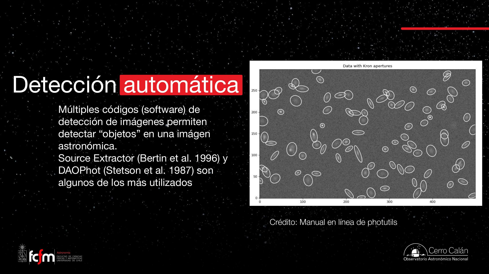
photutils.Es segmentación de imágenes con thresholding + connected components: detectas píxeles sobre un umbral relativo al fondo, los agrupas en blobs, filtras por tamaño/forma y mides propiedades de cada blob. El paso de "rechazar un solo píxel" es eliminación de ruido de tipo sal-y-pimienta; las aperturas adaptativas (Kron) son ROIs ajustadas a cada fuente.
¿Estrella, galaxia o cuásar?
Tamaño (PSF) + color (varios filtros) para clasificar cada objeto.
No todo objeto detectado es una galaxia. El primer criterio es el tamaño aparente:
- Una estrella es, para todo efecto, un punto. Pero al pasar por la atmósfera (un "lente" turbulento que se mueve con el viento) su luz se desparrama según una forma característica: la PSF (Point Spread Function, "función de dispersión de punto"). En la imagen ocupa varios píxeles, con un perfil conocido —algo como un "huevo frito".
- Una galaxia es un objeto extendido: su tamaño real supera el desparrame de la PSF.
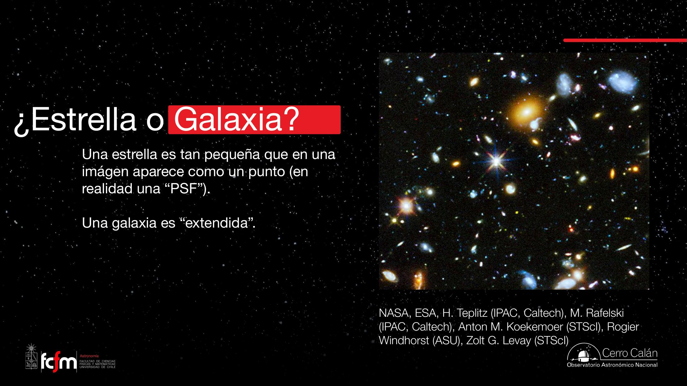
El tamaño no basta, por dos motivos: (1) si la resolución de la imagen es mala, una galaxia pequeña se ve como punto; y (2) existen objetos puntuales que no son estrellas: los cuásares (de quasi-stellar object), también llamados AGN (Active Galactic Nucleus, núcleo galáctico activo).
Qué es un AGN / cuásar
En el centro de prácticamente toda galaxia hay un agujero negro supermasivo: el de la Vía Láctea tiene ≈ 4 millones de masas solares; otros llegan a cientos o miles de millones. El agujero negro en sí no emite luz. Pero cuando una nube de gas cae hacia él, se comprime y se calienta a millones de kelvin, formando un disco de acreción que se convierte en uno de los objetos más brillantes del universo. Esa es la actividad: gas calentándose al caer. Como ocurre en una región diminuta (escala del Sistema Solar) y muy lejana, en la imagen se ve puntual, como una estrella.
La palabra clave en "AGN" es Active: todas las galaxias tienen agujero negro central, pero solo algunos están "alimentándose" y por eso brillan. Cuando un AGN está activo, su luminosidad puede opacar a la galaxia entera que lo aloja: uno se "encandila" y solo ve el punto central. Nada sale del agujero negro; la luz proviene del disco a su alrededor.
Para distinguir estrella de cuásar (ambos puntuales) se usa el color. Una imagen astronómica en color se arma tomando fotos con distintos filtros, cada uno dejando pasar un rango de longitudes de onda (no necesariamente visibles: pueden ser UV o infrarrojo). A cada filtro se le asigna un color (azul/verde/rojo) y se combinan. Con varios filtros (típicamente 5–7 en un estudio serio) reconstruimos la forma del espectro de cada objeto. El espectro de una estrella tiene una forma conocida; el de un AGN es completamente distinto. Así separamos estrellas, cuásares y galaxias.
¿Cerca o lejos? El corrimiento al rojo
La tercera dimensión —la profundidad— se mide con el efecto Doppler de la luz.
La imagen nos da dos dimensiones (posición en el cielo). Falta la profundidad: ¿esa galaxia está dentro o fuera de nuestra "caja"? La respuesta usa de nuevo la expansión: cuanto más lejos está un objeto, más rápido se aleja de nosotros, y eso deja una huella en su luz.
El efecto Doppler es el mismo de un auto de Fórmula 1: el motor hace un ruido constante, pero al acercarse las ondas se comprimen (más agudo) y al alejarse se estiran (más grave). Con la luz: una galaxia que se aleja nos manda ondas estiradas, es decir, de longitud de onda mayor → colores más rojos. A eso le llamamos corrimiento al rojo (redshift, ).
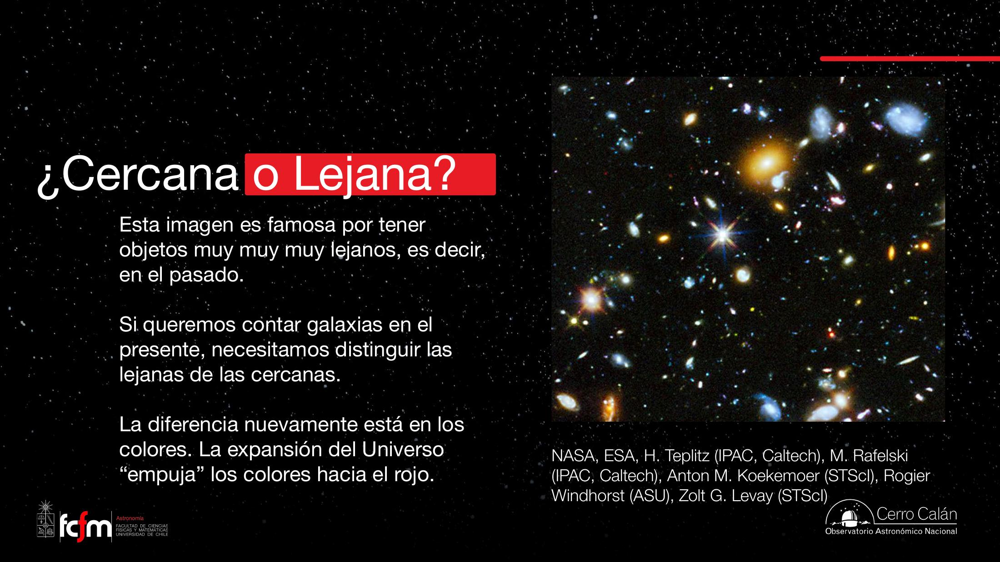
El redshift es un reescalado del eje de longitud de onda: el mismo "patrón" (el espectro) aparece estirado por un factor . Distinguir "rojo intrínseco" de "azul corrido al rojo" es un problema de template matching: buscas qué corrimiento hace coincidir el espectro observado con una plantilla conocida. Eso es exactamente el photometric/spectroscopic redshift.
Resumen de requisitos para contar bien: necesitamos imágenes con (a) resolución suficiente para separar puntos de objetos extendidos, y (b) varias longitudes de onda para clasificar (estrella / AGN / galaxia) y estimar distancia.
El problema de la representatividad
Las galaxias no están repartidas de forma homogénea: cúmulos, vacíos y la telaraña cósmica.
Aunque sepamos contar y medir distancias, queda un problema de fondo: ¿dónde apuntamos el telescopio? Si apuntamos a un cúmulo, contaremos muchísimas; si a un vacío, casi ninguna. La materia no está repartida uniformemente.
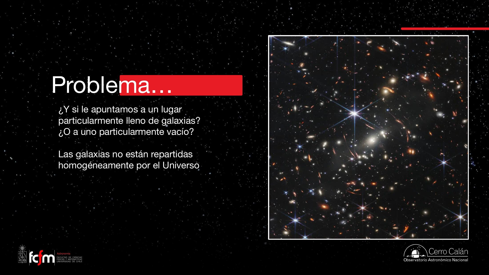
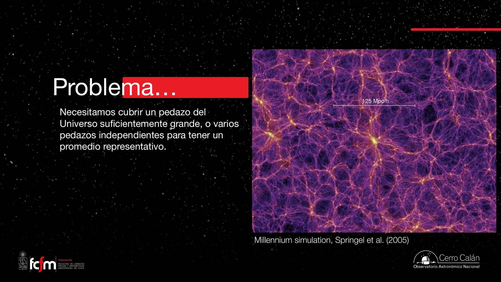
El cúmulo, al curvar el espacio, amplifica y deforma la luz de galaxias de fondo (que de otro modo serían invisibles) — pero también puede producir imágenes múltiples del mismo objeto. Al contar hay que tener cuidado de no contar dos veces la misma galaxia.
La palabra clave es representativo: queremos contar en un pedazo del universo que no sobreestime (cúmulo) ni subestime (vacío) el número típico. ¿Cómo logramos eso?
Estrategias: surveys y data mining
Dos formas de obtener una muestra representativa, y la revolución de los datos abiertos.
Hay dos estrategias complementarias:
- Fuerza bruta: tomar una imagen muy grande del cielo, suficiente para incluir a la vez muchos cúmulos y muchos vacíos. El promedio sale representativo. Es caro.
- Muchos campos pequeños: con un telescopio común, apuntar al azar a muchos lugares desconectados. Con suficientes "pedacitos", en promedio caen sobre cúmulos, vacíos e intermedios, y combinándolos se obtiene la respuesta típica. (Esta estrategia es además la que sirve para el universo lejano, donde hace falta apuntar mucho rato a cada campo.)
Sloan Digital Sky Survey (SDSS)
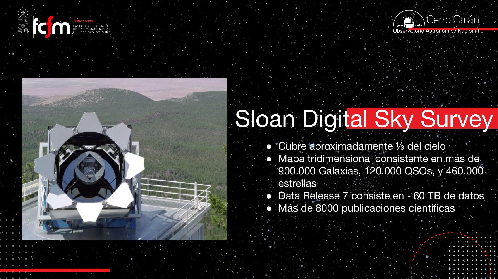
El mapa de SDSS es tridimensional: a la posición en el cielo le suma la distancia, estimada a partir de los colores o, con más precisión, de los espectros. Pero su mayor legado es metodológico: con 60 TB de datos no puedes bajar todo a tu computador. Nace el data mining astronómico — escribir algoritmos que corran sobre una base de datos gigante y devuelvan la respuesta destilada.
SDSS marca el paso a la astronomía moderna: datos abiertos y consultables programáticamente. Hoy se puede ser astrónomo sin tiempo de telescopio propio: basta imaginación para hacer preguntas interesantes sobre datos públicos. La clasificación morfológica de galaxias (espiral vs. elíptica) — fácil para el ojo humano, difícil para reglas a mano — fue de los primeros casos en migrar a redes neuronales entrenadas con cientos de miles de ejemplos etiquetados. El profesor co-dicta el curso "Astroinformática" (machine learning aplicado), parte esencial de la formación moderna.
El Observatorio Vera C. Rubin (LSST)
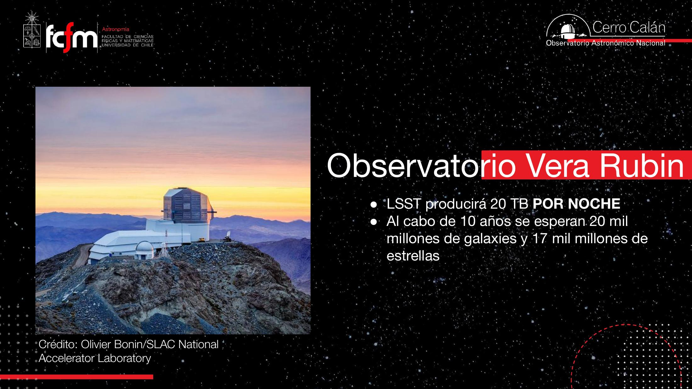
Imposible analizar eso "a mano". El telescopio Rubin viene con un supercomputador: uno escribe un algoritmo y lo envía a correr sobre todos los datos, que devuelve una respuesta reducida. Es la forma moderna de trabajar: llevar el código a los datos, no los datos al código.
La función de luminosidad
El corazón cuantitativo de la clase: cuántas galaxias hay por unidad de volumen en cada brillo.
Para contar de verdad necesitamos un ingrediente más. En astronomía el brillo se mide con la magnitud, una escala logarítmica e invertida: objetos más brillantes tienen magnitudes más negativas.
La magnitud absoluta corrige la distancia: es la magnitud que tendría el objeto si estuviera a 10 parsec (1 pc = 3,26 años luz). Así dos estrellas idénticas a distinta distancia tienen la misma magnitud absoluta. La definición se extrapola a galaxias (aunque "una galaxia a 10 pc" no tenga sentido físico, sirve como referencia común).
Contar… y corregir lo que no vemos
Si graficamos el número de objetos detectados versus su magnitud, vemos pocos objetos brillantes y pocos muy débiles. Pero esos dos "pocos" son por razones opuestas:
- Pocos brillantes: es real — hay genuinamente pocas galaxias muy luminosas.
- Pocos débiles: es un artefacto — los objetos débiles se pierden en el detector (a veces se ven, a veces no). Hay un sesgo de incompletitud.
Hay que corregir esa incompletitud (estimar cuántos se perdieron) y, además, restringirse al volumen comóvil que nos interesa (descartar las demasiado lejanas/cercanas). El resultado es la función de luminosidad: número de galaxias por unidad de volumen comóvil en cada magnitud.
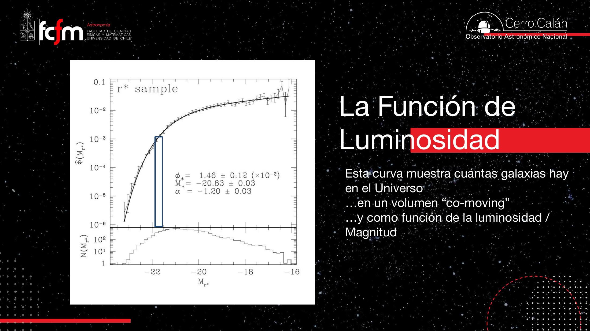
La función de Schechter y sus tres parámetros
La forma se describe con la función de Schechter (1976): una ley de potencias para los débiles, con un corte exponencial para los brillantes.
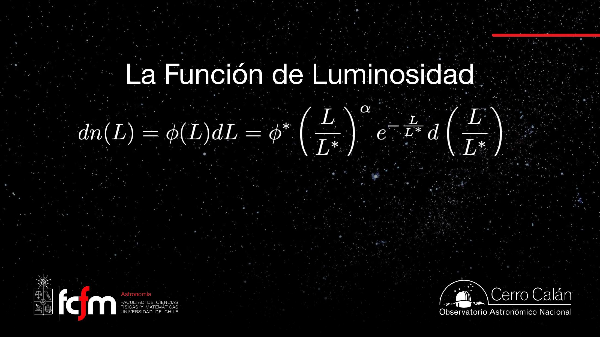
| Parámetro | Qué controla | Intuición |
|---|---|---|
| M* (o L*) | La "rodilla" de la curva | Magnitud donde se pasa de recta (débiles) a caída exponencial (brillantes). Más brillante ⇒ la curva se extiende más. |
| α (alfa) | Pendiente del lado débil | da curva plana; más negativo ⇒ más empinada ⇒ muchísimas más galaxias débiles que brillantes. |
| φ* (fi) | Normalización (altura total) | Sube o baja toda la curva: el número total de galaxias por volumen. |
La función de Schechter es una distribución con cola de potencias (como las que aparecen en tamaños de archivos, grados de nodos en redes o frecuencias de palabras: power laws) más un cutoff exponencial que evita que la cola brillante explote. Ajustar a los conteos corregidos es un problema de fitting de 3 parámetros; es el exponente de la ley de potencias.
Integrar y cortar: la respuesta
Sumar todas las galaxias… pero con límites, porque la integral diverge por un lado.
Para obtener un número hay que integrar la función de luminosidad: sumar el número de galaxias en cada cajita de magnitud, incluyendo la extrapolación hacia los débiles que no alcanzamos a ver. Pero no se puede extrapolar al infinito:
- Lado débil: la curva sube sin parar, lo que daría infinitas galaxias minúsculas. No tiene sentido físico: tiene que existir la galaxia menos brillante. La integral diverge por este lado, así que hay que cortar.
- Lado brillante: el corte exponencial hace que la integral converja sola (hay poquísimas galaxias ultrabrillantes), pero igual se fija un límite.
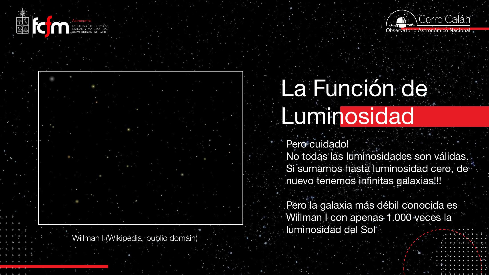
El profesor hace la cuenta integrando entre dos cortes razonables: desde 10 veces más brillante que L* hasta 1.000 veces menos brillante que L*. El resultado:
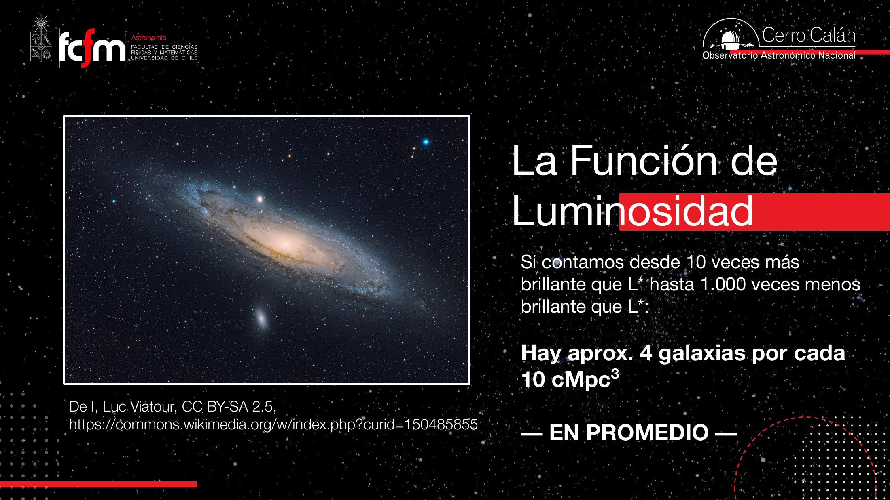
Es un promedio: hay regiones mucho más densas (p. ej. el Quinteto de Stephan, cinco galaxias grandes en un pedacito chico) y regiones casi vacías. Además, en zonas "vacías" suele haber galaxias débiles que sí cuentan. Y hay correcciones finas: galaxias ocultas detrás de otras (poco frecuente) o imágenes dobles por lentes (no contar dos veces).
Por tipo de galaxia y evolución en el tiempo
La misma técnica, refinada, nos cuenta la historia de las galaxias.
Función de luminosidad por tipo morfológico
Podemos construir una función de luminosidad separada para galaxias espirales (azules) y elípticas (rojas). Los parámetros cambian y eso nos enseña algo nuevo:
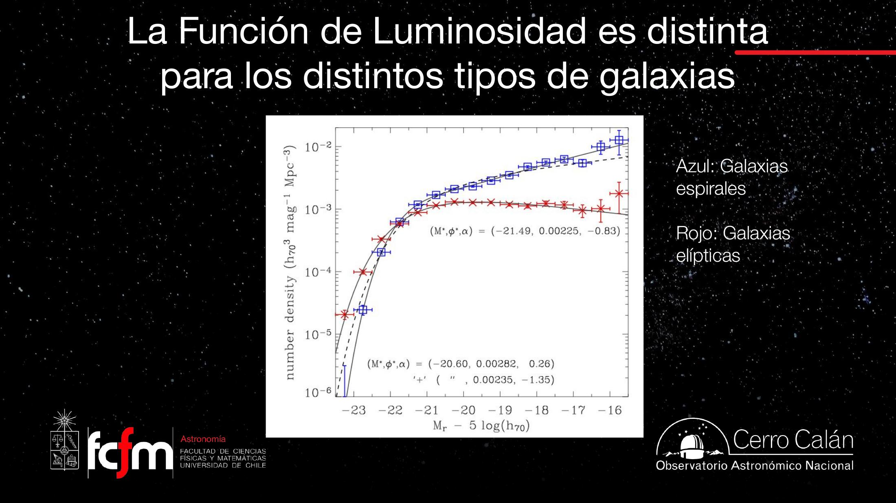
- Pendiente (α): las espirales (azules) tienen α ≈ −1,35 (empinada) → muchas más débiles que brillantes. Las elípticas (rojas) tienen α ≈ −0,83 (más plana, hasta "se da vuelta") → lo común es que sean más brillantes que débiles.
- Rodilla (M*): las elípticas tienen M* ≈ −21,49 (más brillante) vs. −20,60 de las espirales → las elípticas dominan en el extremo brillante del universo.
- Normalización (φ*): más alta para las azules → en total hay más espirales que elípticas.
En palabras: las espirales son más numerosas en general y abrumadoramente más numerosas en su extremo débil; las elípticas, menos numerosas, pero dominan entre las más brillantes. Una versión más cruda (sin separar morfología) divide simplemente por color azul/rojo y muestra lo mismo.
Evolución: mirar lejos es mirar al pasado
Toda esta función de luminosidad es la de un cubo cercano (universo local). Pero como la velocidad de la luz es finita, observar un cubo lejano equivale a ver el universo en el pasado. Para alcanzar galaxias muy distantes hay que apuntar mucho rato a campos pequeños (observaciones profundas). Así se mide cómo era la función de luminosidad en distintas épocas.
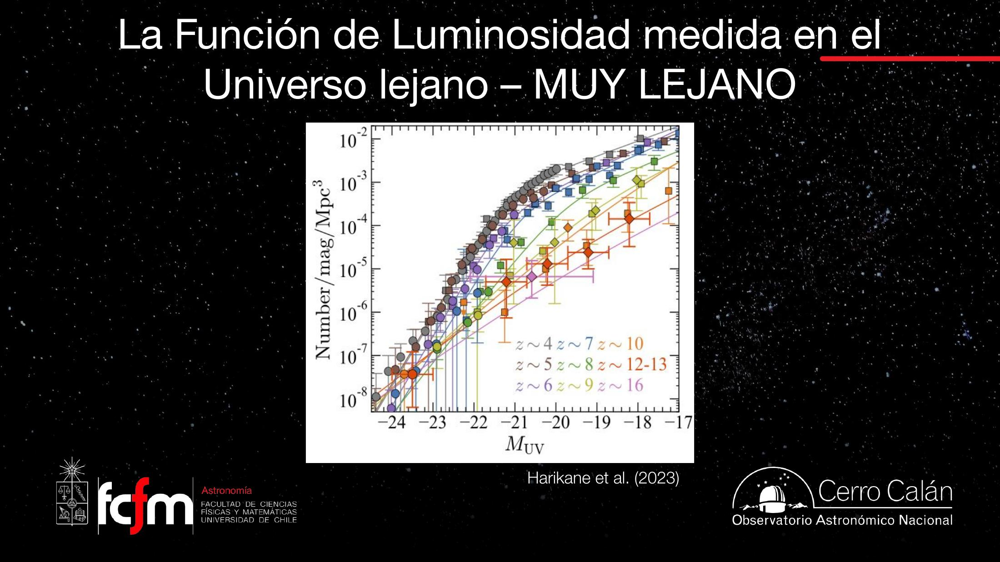
Las tendencias son claras y profundas:
- La normalización aumenta con el tiempo: cada vez hay más galaxias en total (el universo tenía menos galaxias a los 600 millones de años que a los 1.500 millones).
- La curva se aplana con el tiempo: al principio dominaban abrumadoramente las galaxias de bajo brillo; con el tiempo se vuelven (relativamente) más comunes las brillantes. Las galaxias crecen formando estrellas y fusionándose (dos chicas → una grande).
La pregunta "inocente" — ¿cuántas galaxias hay? — nos obligó a construir una técnica (la función de luminosidad) que, aplicada a distintas épocas, se convierte en una herramienta para estudiar la formación y evolución de las galaxias a lo largo de la historia del universo. La respuesta numérica (≈ 4 por 10 cMpc³) es casi lo de menos: lo valioso es todo lo que hubo que entender para llegar a ella.
Conceptos clave
Tabla de repaso rápido.
| Concepto | Qué es / valor | Por qué importa |
|---|---|---|
| Estrellas en la Vía Láctea | ≈ 1011 (cien mil millones) | Orden de magnitud de referencia |
| Volumen comóvil | Volumen que crece con la expansión | "Resta" la expansión para comparar densidades en distintas épocas |
| Energía oscura | Causa (desconocida) de la expansión acelerada | Uno de los mayores misterios abiertos |
| PSF | Forma del "punto" desparramado por la atmósfera | Distingue objetos puntuales (estrellas) de extendidos (galaxias) |
| AGN / cuásar | Disco de acreción de un agujero negro supermasivo | Puntual como estrella, pero color/espectro distinto |
| Filtros / multibanda | 5–7 filtros típicos | Reconstruyen el espectro → clasificar y estimar distancia |
| Corrimiento al rojo z | Mide distancia/época; más lejos = más rojo | |
| Magnitud | Escala log e invertida; brillante = más negativo | |
| Magnitud absoluta M | Magnitud a 10 pc de distancia | Compara brillos intrínsecos quitando la distancia |
| Incompletitud | Objetos débiles que se pierden | Hay que corregir el conteo bruto |
| Función de Schechter | Describe la FL: potencia + corte exponencial | |
| M* / α / φ* | Rodilla / pendiente débil / normalización | Los 3 parámetros de la FL |
| Willman 1 | ≈ 1.000 L☉ | Galaxia conocida más débil → corte del lado débil |
| Densidad de galaxias | ≈ 4 por 10 cMpc³ (promedio) | La respuesta destilada de la clase |
| SDSS | ≈ 1/3 del cielo, ≈ 900.000 galaxias, 60 TB | Origen del data mining astronómico |
| Vera Rubin (LSST) | ≈ 20 TB/noche; ≈ 2×1010 galaxias en 10 años | Astronomía moderna: llevar el código a los datos |
| Espirales vs. elípticas | α: −1,35 vs. −0,83; M*: −20,60 vs. −21,49 | Más espirales en total; elípticas dominan el extremo brillante |
Exámenes de práctica
10 exámenes de 5 preguntas (3 de alternativas autocorregibles + 2 de respuesta escrita).
- Examen 01La pregunta y el volumen comóvil
- Examen 02Expansión y energía oscura
- Examen 03Detección y clasificación
- Examen 04AGN y cuásares
- Examen 05Corrimiento al rojo
- Examen 06Representatividad y lentes
- Examen 07Surveys y data mining
- Examen 08Función de luminosidad
- Examen 09Integración y la respuesta
- Examen 10Integrador